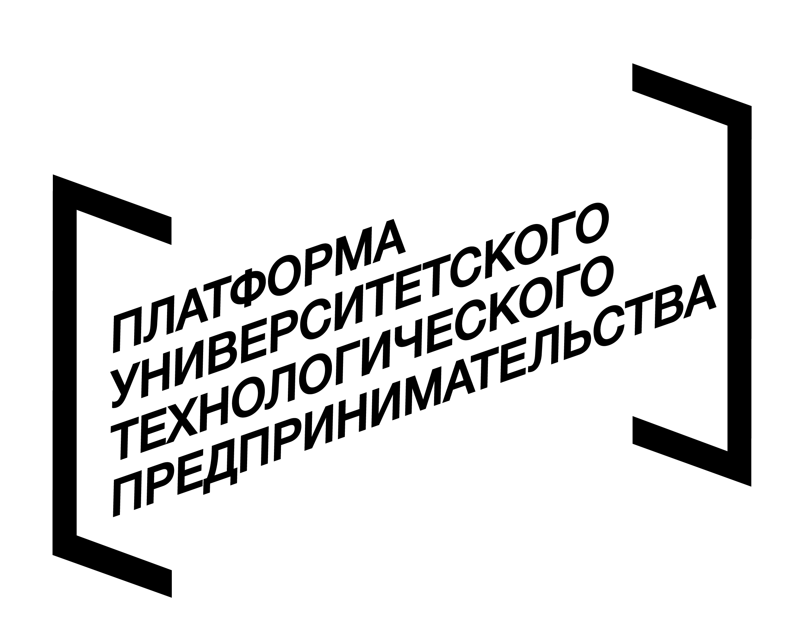

Самоходная платформа
Электроприводы, аккумуляторное питание и дистанционное управление.
ДИСТАНЦИОННОЕ УПРАВЛЕНИЕ × УЧЕБНАЯ ПРАКТИКА
Создаём прототип мобильного роботизированного комплекса для имитации вспомогательных операций при ликвидации последствий аварий в учебных условиях.
Проект в разработке. Возможности и условия пилота согласуются индивидуально.
Дистанционное наблюдение
Схема интерфейса, не видеопотокЗАДАЧИ ПРОТОТИПА
Разрабатывается учебный прототип. Работа в реальной аварийной среде и взрывозащита не заявляются как подтверждённые свойства.
01 — РЕШЕНИЕ
Создаём прототип мобильного роботизированного комплекса для имитации вспомогательных операций при ликвидации последствий аварий в учебных условиях.
Электроприводы, аккумуляторное питание и дистанционное управление.
Передача изображения для визуального наблюдения.
Перемещение лёгких элементов условного завала.
Планируется движение вперёд и назад с изменением направления по командам оператора.
03 — ПРИМЕНЕНИЕ
СОТРУДНИЧЕСТВО
Обсудим ваши требования, условия применения и возможный формат пилотного проекта.
Подготовить описание задачиСОТРУДНИЧЕСТВО
Обсудим ваши требования, условия применения и возможный формат пилотного проекта.
Подготовить описание задачи02 — ПОРЯДОК РАБОТЫ
Выберите направление и опишите требования к проекту.
Уточним условия применения и ожидаемый результат.
Обсудим состав разработки и технические ограничения.
Согласуем возможный формат демонстрации или пилота.
Функции и результаты, предусмотренные проектом, находятся в разработке. Подтверждённые характеристики будут уточняться по результатам испытаний и апробации.
О ПРОЕКТЕ
Мобильный роботизированный комплекс для ликвидации последствий аварий в ЗРУ/КРУ (газо- и водоотвод, разборка завалов)
Разработка по заявке СтС-613877. Сайт представляет проект на стадии создания и подготовки к апробации.
04 — ОБСУДИМ ЗАДАЧУ
Выберите направление и опишите ожидаемый результат. Сохраните описание, чтобы использовать его при согласовании с командой.
Контакты проектной компании будут добавлены после подтверждения. Эта форма сохраняет описание на ваше устройство.

Проект реализован при поддержке Фонда содействия инновациям в рамках программы «Студенческий стартап» Платформы университетского технологического предпринимательства федерального проекта «Технологии», входящего в состав национального проекта «Эффективная и конкурентная экономика».